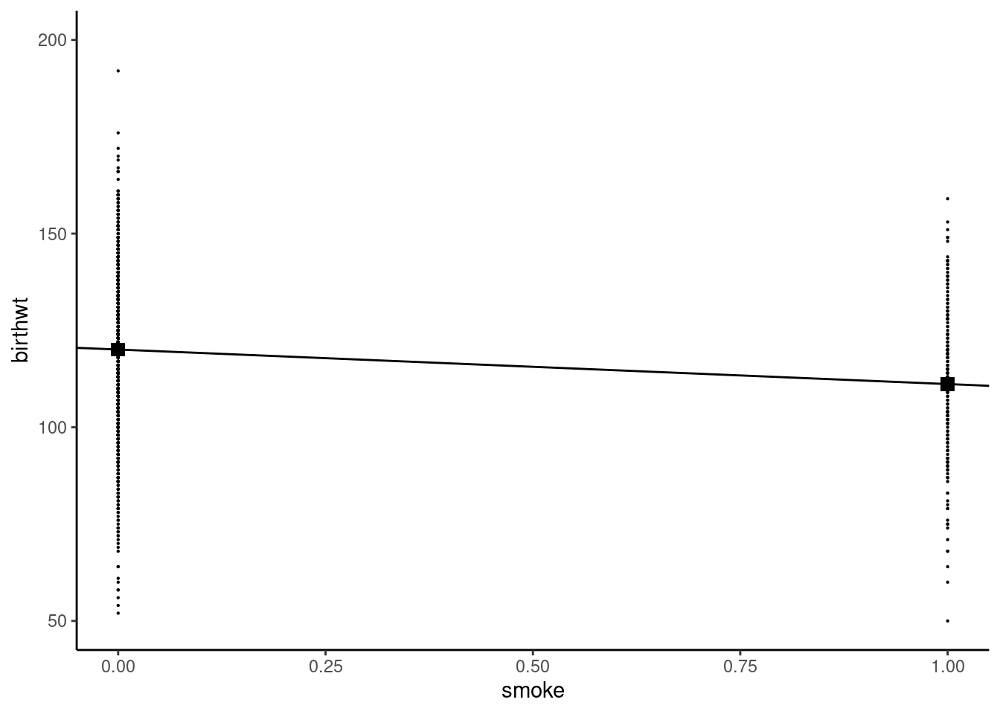
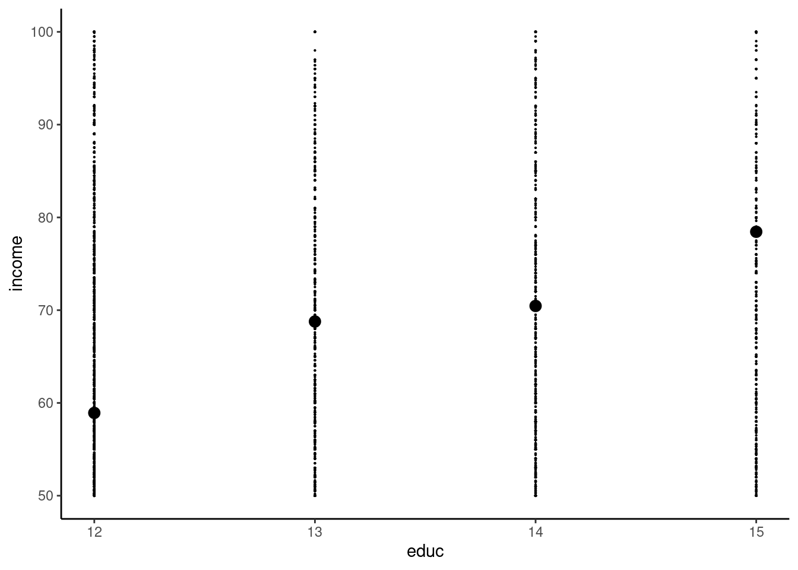
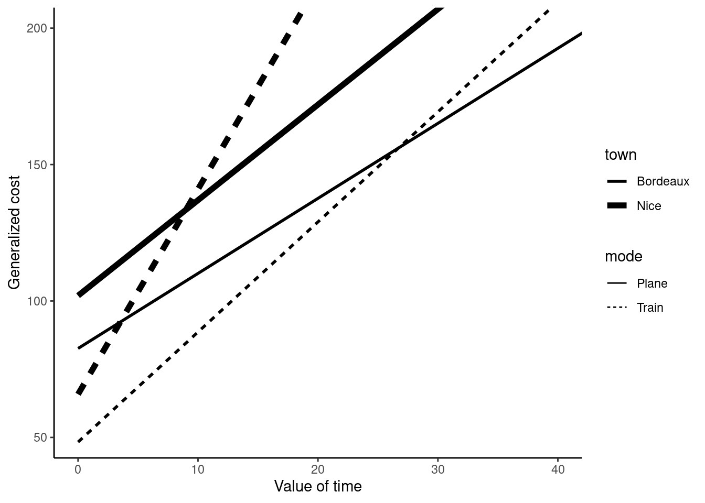
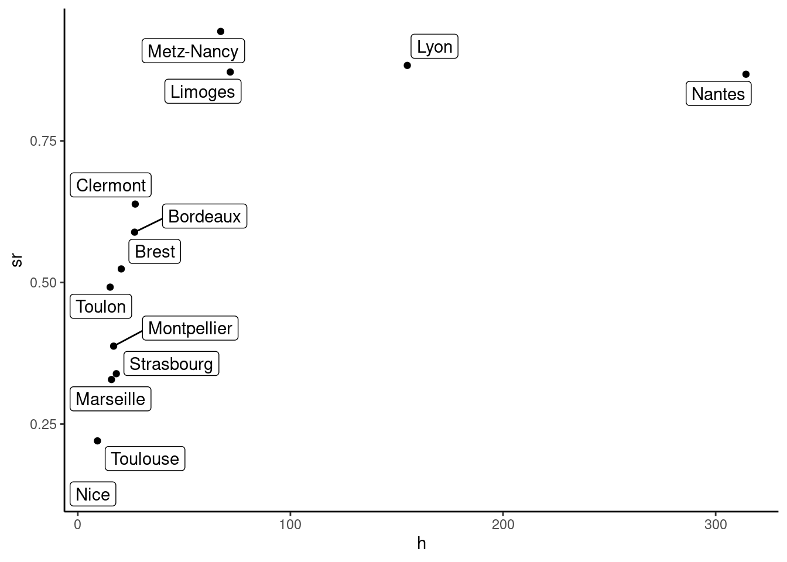
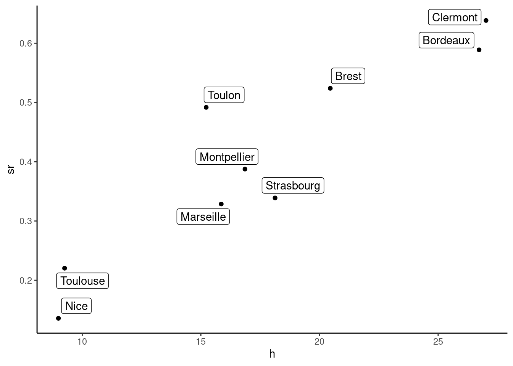
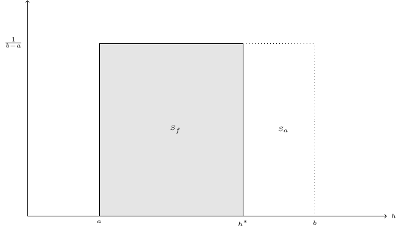
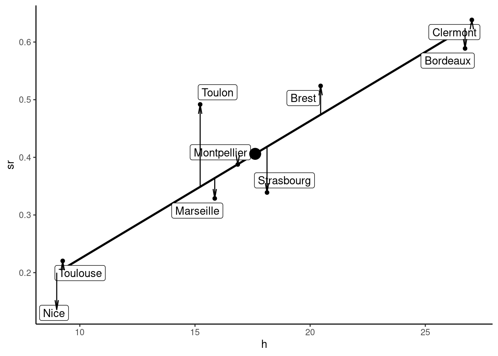
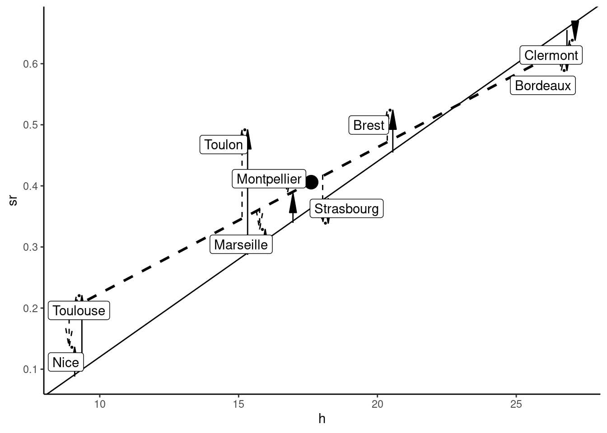
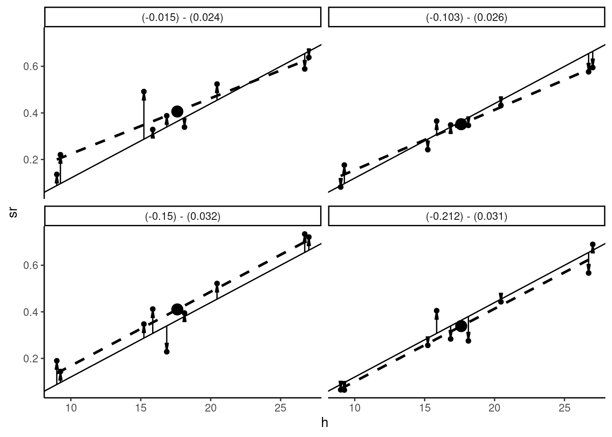

birthwt <- birthwt %>% mutate(smoke = ifelse(cigarettes > 0, 1, 0))1 Simple linear regression model
Obviously there will be rarely a deterministic relationship between a response and one or several covariates. Education has a positive causal effect on wage, but there are many other variables that affect wages: sex, ethnicity, experience, abilities, to name a few. Even if a large set of relevant covariates are observed, some are not (this is in particular the case for abilities). Therefore, we won’t try to modelize the value of \(y\) as a function of covariates \(x\) and some unknown parameters \(\gamma\): \(y = f(x, \gamma)\) but, more modestly, the conditional expectation of \(y\):
\[ \mbox{E}(y | x) = f(x, \gamma) \tag{1.1}\]
Back to our education / wage model, the conditional expectation is the mean value of the wage in the population for a given value of education. It is therefore a function of \(x\) which takes as many values as there are distinct values of \(x\).
In this chapter, we discuss the simplest econometric model, which is the simple linear regression model. This is a simple model because there is only one covariate \(x\). This is a linear model because the \(f\) function is assumed to be linear. Equation 1.1 can then be rewritten as follow:
\[ \mbox{E}(y | x) = \alpha + \beta x \tag{1.2}\]
Section 1.1 details the notion of conditional expectation and its relation with the notion of covariance. Section 1.2 presents the model and the data set that will be used throughout this chapter. Section 1.3 is devoted to the computation of the ordinary least squares estimator. Section 1.4 presents the geometry of least squares. Section 1.5 explains how to compute the ordinary least squares estimator using R. Finally Section 1.6 presents the notion of data generator process and explains how simulations can be usefully performed.
1.1 Conditional expectation and covariance
To estimate the two unknown parameters \(\alpha\) (the intercept) and \(\beta\) (the slope), we need a data set that contains different individuals for which \(x\) and \(y\) are observed. Typically, we’ll consider a random sample, which is a small subset of the whole population consisting of a set of individuals randomly drawn from this population.
Linear models: two examples
To understand what the hypothesis of the simple linear model implies, we consider two data sets. The first one is called birthwt (Mullahy 1997) and contains birth weights (birthwt in ounces) of babies and smoking habits of mothers. The cigarettes variable is the number of cigarettes smoked per day during pregnancy (for about 85% of the mothers, it is equal to 0). We first compute a binary variable for smoking mothers:
and consider a simple linear regression model with birthwt as the response and smoke as a covariate. As the covariate takes only two values, so does the conditional expectation. In a linear regression model, Equation 1.2 will therefore returns two values, \(\alpha\) for \(x = 0\) and \(\alpha + \beta\) for \(x = 1\). \(\alpha\) and \(\alpha + \beta\) are therefore the expected birth weights for respectively non-smoking and smoking mothers. Note that, because we have as many parameters as values of the covariate, the linear hypothesis is necessarily supported. Natural estimators of the conditional expectations are the conditional sample means, i.e., the average birth weights in the sample for non-smoking and smoking women:
cond_means <- birthwt %>%
group_by(smoke) %>%
summarise(birthwt = mean(birthwt))
cond_means# A tibble: 2 × 2
smoke birthwt
<dbl> <dbl>
1 0 120.
2 1 111.Therefore, our estimation of \(\alpha\) is \(\hat{\alpha} = 120.1\) and the estimation of \(\alpha + \beta\) is \(111.1\), so that \(\hat{\beta} = 111.1 - 120.1 = -8.9\) ounces, which is the estimation of birth weight’s loss caused by smoking during pregnancy. This can be illustrated using a scatterplot (see Figure 1.1), with smoke on the horizontal axis and birthwt on the vertical axis, all the points having only two possible abscissa values, 0 and 1. The conditional means are represented by square points, and we also drew the line that contains these two points. The intercept is therefore the y-value of the square point for \(x = 0\) which is \(\hat{\alpha} = 120.1\). The slope of the line is the ratio of the vertical and the horizontal distances between the two large points, which are respectively \(\hat{\beta}\) and \(1 - 0 = 1\) and is therefore equal to \(\hat{\beta}\).

Consider now the relationship between education and wage. The adoptees data set (Plug 2004) contains the number of years of education educ and the annual income income (in thousands of US$) for 16481 individuals. We restrict the sample to individuals with an education level between 12 (high school degree) and 15 years (bachelor’s degree).
adoptees <- adoptees %>%
filter(educ >= 12, educ <= 15)and we compute the mean income for the four values of education:
adoptees %>% group_by(educ) %>%
summarise(income = mean(income))# A tibble: 4 × 2
educ income
<dbl> <dbl>
1 12 58.9
2 13 68.8
3 14 70.5
4 15 78.4The scatterplot is presented in Figure 1.2:

This time, we have four distinct values of the covariate and we can estimate four conditional sample means, but there are only two parameters to estimate for the simple linear model. Therefore, we can’t estimate directly \(\alpha\) and \(\beta\) using the conditional means, except in the improbable case where the four conditional means lie on a straight line, which means that, for one additional year of education, the average wage increases exactly by the same amount. We can see in Figure 1.2 that it is not the case: the increase of income is 9.9 for a 13th year of education, 1.7 for a 14th year and 8 for a 15th year. We therefore need a formal method of estimation which enables us to obtain values of \(\hat{\alpha}\) and \(\hat{\beta}\). The remaining of this chapter is devoted to the presentation of this estimator, which is called the ordinary least squares (OLS) estimator.
Linear model, conditional expectation and covariance
For now, it is very important to understand the relation between the conditional expectation and the covariance. The covariance between \(x\) and \(y\) is, denoting \(\mu_x = \mbox{E}(x)\) and \(\mu_y = \mbox{E}(y)\):
\[ \sigma_{xy} = \mbox{cov}(x, y) = \mbox{E}\left[(x - \mu_x)(y - \mu_y)\right] = \mbox{E}(xy) - \mu_x\mu_y \] It is the expectation of the product of the two variables in deviations from their respective expectations or the expectation of the product minus the product of the expectations. The expectation is for the two variables \(x\) and \(y\) and the law of repeated expectation states that this expectation can be written as:
\[ \mbox{cov}(x, y) = \mbox{E}_x\left[\mbox{E}_y\left((y - \mu_y)(x - \mu_x)\mid x\right)\right] = \mbox{E}_x\left[(x - \mu_x)\mbox{E}_y(y - \mu_y\mid x)\right] \]
Therefore, the covariance between \(x\) and \(y\) is also the covariance between \(x\) and the conditional expectation of \(y\) (which is a function of \(x\)).
As an example, consider the case where \(y\) is the hourly wage and \(x\) the education level, which takes the values 0 (highschool), 3 (bachelor) and 5 (graduate), the frequencies for the three levels of education being 0.4, 0.3 and 0.3. Let denote \(h\), \(b\) and \(g\) these three education levels and assume that \(\mbox{E}(y\mid x) = 8 + 0.5 x\), which means that one more year of education increases the expected wage by $0.5. The expected level of education is \(\mu_x = 0.4 \times 0 + 0.3 \times 3 + 0.3 \times 5 = 2.4\). The expected wage for the three levels of education are \(\mu_{xh} = 8\), \(\mu_{xb} = 9.5\) and \(\mu_{xg} = 10.5\). The expected wage is then \(\mu_y = 0.4 \times 8 + 0.3 \times 9.5 + 0.3 \times 10.5 = 9.2\). We first compute the first term of the covariance between wage and education for \(x = x_h = 0\):
\[ \begin{array}{rcl} \mbox{E}\left[ (x - \mu_x)(y - \mu_y)\mid x = x_h\right] &=& \mbox{E}\left[ (x_h - \mu_x)(y - \mu_y)\mid x = x_h\right] \\ &=& (x_h - \mu_x) \mbox{E}\left[ (y - \mu_y)\mid x = x_h\right] \\ &=& (x_h - \mu_x)(\mbox{E}(y\mid x = x_h) - \mu_y)\\ &=& (0 - 2.4) \times (8 - 9.2) = 2.88 \end{array} \tag{1.3}\]
Similarly, we get \((3 - 2.4) \times (9.5 - 9.2) = 0.18\) for the bachelor level and \((5 - 2.4)\times (10.5 - 9.2) = 3.38\) for the master level. Finally the covariance is obtained as the weight average of these three terms:
\[ \sigma_{xy} = 0.4 \times 2.88 + 0.3 \times 0.18 + 0.3 \times 3.38 = 2.22 \]
Now consider the case where the conditional expectation of the hourly wage is the same for the three education levels: \(\mbox{E}(y \mid x = x_h) = \mbox{E}(y \mid x = x_b) = \mbox{E}(y \mid x = x_m)\). These three conditional expectations are therefore equal to the unconditional expectation \(\mu_y\) and Equation 1.3 is clearly 0 and so is the covariance. Therefore, a constant conditional expectation of \(y\) given \(x\) implies that the covariance is 0. Note that the opposite is not true. For example, if \(\mu_{yh} = 8\), \(\mu_{yb} = 13.2\) and \(\mu_{ym} = 6.2\), the relation between the conditional mean of the wage and the level of education is no more linear, and it is not monotonous but inversely U-shaped (the wage first increases with education and then decreases). The unconditional mean is still: \(\mu_y = 0.4 \times 8 + 0.3 \times 13.2 + 0.3 \times 6.2 = 9.2\), but the covariance is then:
\[ \sigma_{xy} = 0.4 \times (0-2.4) \times (8 - 9.2) + 0.3 \times (3-2.4) \times (13.2 - 9.2) + 0.3 \times (5 - 2.4) \times (6.2 - 9.2) = 0 \]
Therefore, a 0 covariance doesn’t imply that the conditional mean is constant. However, in the special case where the conditional mean is a linear function of the conditional variable, the two properties of 0 covariance and constant conditional means are equivalent.
Consider now the sample counterpart of this theoretical covariance. Consider a sample of 10 individuals for which the levels of education and the hourly wages are:
| education | 0 | 0 | 0 | 0 | 3 | 3 | 3 | 5 | 5 | 5 |
| wage | 8 | 7 | 8 | 9 | 9 | 9.5 | 10 | 10 | 10.5 | 11 |
The sample means of \(x\) and \(y\) are : \(\bar{x} = 2.4\) and \(\bar{y} = 9.2\). The conditional means of \(y\) for a given value of \(x\) in the sample are simply the means for the three subsamples defined by an education level:
- \(x_h=0\) : \(\bar{y}_h = \frac{8+7+8+9}{4} = 8\),
- \(x_b=3\) : \(\bar{y}_b = \frac{9+9.5+10}{3} = 9.5\),
- \(x_m=5\) : \(\bar{y}_m = \frac{10, 10.5, 11}{3} = 10.5\),
and the covariance is obtained as the mean of the products of the two variables in deviations from their mean, or equivalently by the difference between the mean of the products and the products of the means:1
\[ \hat{\sigma}_{xy} = \frac{\sum_{n=1}^N (x_n - \bar{x}) (y_n - \bar{y})}{N}=\frac{\sum_{n=1}^N x_n y_n}{N}-\bar{x}\bar{y} \]
The sum of the products is \(\sum_n x_n y_n = 243\) and the covariance is then:
\[ \hat{\sigma}_{xy}=\frac{243}{10} - 2.4 \times 9.2 = 2.22 \] We also can consider the three subsamples defined by education levels, denoting \(n=1, ..., H\), \(n=H+1, ..., H+B\), \(n=H+B+1, ..., N\) (with \(H=4\), \(B=3\) and \(N=10\)) observations for, respectively, a high-school, a bachelor and a master level. We then have:
\[ \hat{\sigma}_{xy} = \frac{\sum_{n=1}^H (x_n - \bar{x})(y_n - \bar{y}) + \sum_{n=H+1}^{H+B} (x_n - \bar{x})(y_n - \bar{y}) + \sum_{n=H+B+1}^N (x_n - \bar{x})(y_n - \bar{y})}{N} \] For example, for \(n=1, ..., H\), the value of \(x\) is the same: \(x_n=x_h=0\). Therefore, we can write \(\sum_{n=1}^H (x_n - \bar{x})(y_n -\bar{y}) = (x_h - \bar{x}) \sum_{n=1}^H (y_n -\bar{y})\) and more generally:
\[ \hat{\sigma}_{xy} = \frac{(x_h - \bar{x})\sum_{n=1}^H (y_n - \bar{y}) + (x_b - \bar{x})\sum_{n=H+1}^B (y_n - \bar{y}) + (x_m - \bar{x})\sum_{n=H+B+1}^N (y_n - \bar{y})}{N} \]
Moreover \(\frac{\sum_{n=1}^H (y_n - \bar{y})}{H}=(\bar{y}_h-\bar{y})\) and then:
\[ \hat{\sigma}_{xy} = \frac{(x_h - \bar{x})H(\bar{y}_h-\bar{y})+ (x_b - \bar{x})B(\bar{y}_b -\bar{y})+ (x_m - \bar{x})M(\bar{y}_m - \bar{y})}{N} \]
Denoting \(f_h = \frac{H}{N}\), \(f_b = \frac{B}{N}\) and \(f_m=\frac{M}{N}\) the empirical frequencies of the three education levels in the sample:
\[ \hat{\sigma}_{xy} = f_h(x_h - \bar{x})(\bar{y}_h-\bar{y})+ f_b(x_b - \bar{x})(\bar{y}_b -\bar{y})+ (x_m - \bar{x})(\bar{y}_m - \bar{y}) \]
Finally, denoting \(k=h, b, m\) the education levels:
\[ \hat{\sigma}_{xy}=\hat{\sigma}_{x\bar{y}_x}= \sum_k f_k (x_k- \bar{x})(\bar{y}_k-\bar{y}) \]
Therefore, the covariance between \(x\) and \(y\) is also the covariance between \(x\) and the mean values of \(y\) for given values of \(x\). We have here: \(\bar{y}_h = 8\), \(\bar{y}_b = 9.5\) and \(\bar{y}_m = 10.5\). The covariance is then:
\[ \hat{\sigma}_{xy} = 0.4 \times (0 - 2.4) \times (8 - 9.2) + 0.3 \times (3 - 2.4) \times (9.5 - 9.2) + 0.3 \times (5 - 2.4) \times (10.5 - 9.2) = 2.22 \]
Consider now the case where the mean wage is the same for every education level: \(\bar{y}_b=\bar{y}_l=\bar{y}_m=\bar{y}=9.2\). In this case, the covariance is obviously 0 because \(\bar{y}_k-\bar{y}=0\;\forall k\).
1.2 Model and data set
We’ll consider in this chapter the question of mode shares for inter-urban transportation. More precisely, considering that a trip can be made using one out of two transport modes (air and rail), how can we modelize the market shares of both modes? We’ll use in this section a popular model in transportation economics which is the price-time model. price_time contains aggregate data about rail and air transportation between Paris and 13 French towns in 1995, it is reproduced from Bonnel (2004) pp. 364-366.
price_time %>% print(n = 3)# A tibble: 13 × 7
town trafic_rail trafic_air price_rail price_air time_rail
<chr> <dbl> <dbl> <dbl> <dbl> <dbl>
1 Bordeaux 2005 1400 48.3 82.6 242
2 Brest 471 428 51.6 98.6 308
3 Clermont 429 243 32.7 89.4 266
# ℹ 10 more rows
# ℹ 1 more variable: time_air <dbl>For the sake of simplicity, we’ll use shorter names for the variables:
prtime <- price_time %>%
set_names(c("town", "qr", "qa", "pr", "pa", "tr", "ta"))Variables are prices (pr and pa) in euros, transport times (tr and ta) in minutes and thousands of trips (qf and qa) for the two modes (r for rail and a for air). We first compute the market shares of rail:
prtime <- mutate(prtime, sr = qr / (qr + qa))
prtime %>% pull(sr) %>% summary
## Min. 1st Qu. Median Mean 3rd Qu. Max.
## 0.136 0.339 0.524 0.555 0.868 0.943Rail’s market share exhibits huge variations in the sample, ranging from 14 to 94%. For an individual, the relevant cost of a trip is the generalized cost, which is the sum of the monetary cost and the value of the travel time. Denoting \(h^i\) the time value of individual \(i\), in euros per hour, the generalized cost for the two modes are:
\[ \left\{ \begin{array}{rcl} c_{a} ^ i &=& p_{a} + h ^ i t_{a} / 60\\ c_{r} ^ i &=& p_{r} + h ^ i t_{r} / 60\\ \end{array} \right. \tag{1.4}\]
Plane is typically faster and more expensive than train, which means that in the time-value / generalized cost plane, the generalized cost for rail will be represented by a line with a lower intercept (the price of train is lower) and with a higher slope (transport time is higher) than the one that corresponds to air. Generalized cost for both modes and for the two towns of Bordeaux and Nice are presented in Figure 1.3.

Every individual will choose the mode with the lowest generalized cost. For example, \(i\) will choose the train if \(c_r^i < c_a^i\). This will depend on the individual value of time: an individual with a high value of time will choose the plane as an individual with a lower travel time will choose the train. For given values of prices and travel times, one can compute a value of travel time \(h^*\) which equates the generalized costs of the two modes in Equation 1.4:
\[ h^* = 60\frac{p_a - p_r}{(t_r - t_a)} \]
For Bordeaux and Nice, these time values are respectively 26.7 and 9 euros per hour. Nice is actually very far from Paris and only people with a very low value of time would spend 7.5 hours in the train instead of taking a plane. We now compute this threshold value for every city:
prtime <- mutate(prtime, h = (pa - pr) / ( (tr - ta) / 60) )
prtime %>% pull(h) %>% summary
## Min. 1st Qu. Median Mean 3rd Qu. Max.
## 9.0 15.9 20.4 59.0 67.2 314.3There are huge variations of the threshold value of time, as it ranges from 9 (Nice) to 314 (Nantes) euros per hour. Before considering a theoretical model that links the market share of train with the threshold value of time, let’s have a first glance at Figure 1.4 of this relationship using a scatterplot.

The relationship between the threshold value of time and rail’s market share seems approximately linear, except for cities where the market share of train is very high (more than 75%). For now, we’ll remove these four cities from the sample and plot on Figure 1.5 the scatterplot for this restricted sample.2
prtime <- filter(prtime, sr < 0.75)
Now, we consider the distribution of the values of time. If \(h\) follows a given distribution between \(a\) and \(b\), train’s market share is the share of the population for which the value of time is between \(a\) and \(h^*\) (and plane’s market share is the share of the population for which the value of time is between \(h^*\) and \(b\)). The simplest probability distribution is the uniform distribution, which is defined by a constant density equal to \(\frac{1}{b-a}\) between \(a\) and \(b\). It is represented in Figure 1.6. The area of the rectangle of width \([a,b]\) and height \([0, \frac{1}{b-a}]\) is 100%, because the whole population has a time value between \(a\) and \(b\). This rectangle has two components:
- a first rectangle of width \([a, h ^ *]\) which includes people for which time value is below \(h^*\) and therefore take the train,
- a second rectangle of width \([h ^*, b]\) which includes people for which time value is higher than \(h^*\) and therefore take the plane.
Stated differently: \(s_f = \frac{h^* - a}{b - a} = -\frac{a}{b - a} + \frac{1}{b-a} h^*\) and this model therefore predicts a linear relationship between \(h^*\) and \(s_f\), the intercept being \(-\frac{a}{b - a}\) and the slope \(\frac{1}{b - a}\). Of course, rail’s market share depends on other variables than the threshold value of time, so that the linear relationship concerns the conditional expectation of rail’s market share. With \(y=s_f\) and \(x=h^*\), we therefore have a linear model of the form: \(\mbox{E}(y | x) = \alpha + \beta x\). Moreover, the two parameters to be estimated \(\alpha\) and \(\beta\) are functions of the structural parameters of the model \(a\) and \(b\) which are the minimum and the maximum of the value of time.

1.3 Computation of the OLS estimator
The model we seek to estimate is: \(\mbox{E}(y_n \mid x_n) = \alpha+\beta x_n\). The difference between the observed value of \(y\) and its conditional expectation is called the error for observation \(n\):
\[ y_n - \mbox{E}(y_n \mid x_n) = \epsilon_n \]
The linear regression model can therefore be rewritten as:
\[ y_n = \mbox{E}(y_n \mid x_n) + \epsilon_n = \alpha + \beta x_n + \epsilon_n \]
\(\epsilon_n\) is the error for observation \(n\) when the values of the unknown parameters \((\alpha, \beta)\) are set to their true values \((\alpha_o, \beta_o)\). For given values of \((\alpha, \beta)\), obtained using an estimation method, \(\epsilon_n\) will be called the residual for observation \(n\). The residual for an observation is therefore the vertical distance between the point for observation \(n\) and the regression line.
We seek to draw a straight line that is as closest as possible to all the points of our sample as in Figure 1.5. In the simple linear regression model, the distance between a point and the line is defined by the vertical distance, which is the residual for this observation. For the whole sample, we need to aggregate this individual measures of distance. Summing them is not an issue, as there are positive and negative values of the residuals and the sum may be very close to zero even if the individual residuals are very high in absolute values. One solution would be to use the sum of the absolute values of the residuals,3 but with the OLS estimator, we’ll consider the sum of the squares of the residuals (also called the residual sum of squares (RSS). Taking the squares, as taking the absolute values, removes the sign of the individual residuals and it results in an estimator which has nice mathematical and statistical properties. We’ll therefore consider a function \(f\) which depends on the value of the response and the covariate in the sample (two vectors \(x\) and \(y\) of length \(N\)) and on two unknown parameters \(\alpha\) and \(\beta\), respectively the intercept and the slope of the regression line:
\[ f(\alpha, \beta |x, y)=\sum_{n = 1} ^ N (y_n - \alpha - \beta x_n) ^ 2 \]
Note that we write \(f\) as a function of the two unknown parameters conditional on the values of \(x\) and \(y\) for a given sample. First-order conditions for the minimization of \(f\) are:
\[ \left\{ \begin{array}{rcl} \displaystyle \frac{\partial f}{\partial \alpha} &=& -2 \sum_{n = 1} ^ N \left(y_n - \alpha - \beta x_n\right) = 0 \\ \displaystyle \frac{\partial f}{\partial \beta} &=& -2\sum_{n=1}^N x_n\left(y_n-\alpha-\beta x_n\right)=0 \end{array} \right. \tag{1.5}\]
Or, dividing by \(-2\):
\[ \sum_{n = 1} ^ N\left(y_n - \alpha -\beta x_n\right) = \sum_{n = 1} ^ N \epsilon_n = 0 \tag{1.6}\]
\[ \sum_{n = 1} ^ N x_n\left(y_n - \alpha - \beta x_n\right) = \sum_{n = 1} ^ N x_n \epsilon_n = 0 \tag{1.7}\]
Equation 1.6 indicates that the sum (or the mean) of the residuals in the sample is 0. Dividing this expression by \(N\) also implies that, denoting \(\bar{y}\) and \(\bar{x}\) the sample means of the response and of the covariate:
\[ \bar{y} = \alpha + \beta \bar{x}, \tag{1.8}\]
which means that the sample mean is on the regression line. Denoting \(\hat{\epsilon}_n\) the residuals of the OLS estimator, Equation 1.7 states that \(\sum_n x_n \hat{\epsilon} / N=0\), i.e., that the average cross-product of the covariate and the residual is 0. But, as the sample mean of the residuals \(\bar{\hat{\epsilon}}\) is 0, this expression is also the covariance between the covariate and the residuals:
\[ \hat{\sigma}_{x\hat{\epsilon}} = \frac{\sum_{n = 1} ^ N (x_n - \bar{x})(\hat{\epsilon}_n - \bar{\hat{\epsilon}})}{N} = \frac{\sum_{n = 1} ^ N x_n \hat{\epsilon}_n}{N} - \bar{x}\bar{\hat{\epsilon}}= \frac{\sum_{n = 1} ^ N x_n \hat{\epsilon}_n}{N}= 0 \]
which means that the regression line is such that there is no correlation between the covariate and the residuals in the sample. Subtracting \(\bar{y} - \alpha - \beta \bar{x}\), which is 0 (see Equation 1.8) from Equation 1.7, one gets:
\[ \sum_{n = 1}^N x_n\left[\left(y_n - \bar{y}\right)-\beta \left(x_n - \bar{x}\right)\right] = 0 \]
Moreover, \(\sum_{n = 1} ^ N \bar{x}\left[\left(y_n - \bar{y}\right) - \beta\left(x_n - \bar{x}\right)\right] = 0\) and so:
\[ \sum_{n=1} ^ N \left(x_n - \bar{x}\right)\left[\left(y_n - \bar{y}\right) - \beta\left(x_n - \bar{x}\right)\right] = 0 \tag{1.9}\]
Solving for \(\beta\), we finally get the estimator of the slope:
\[ \hat{\beta} = \frac{\sum_{n = 1} ^ N (x_n - \bar{x})(y_n - \bar{y})}{\sum_{n = 1} ^ N (x_n - \bar{x}) ^ 2} = \frac{S_{xy}}{S_{xx}}= \frac{\hat{\sigma}_{xy}}{\hat{\sigma}_x ^ 2}= \hat{\rho}_{xy} \frac{\hat{\sigma}_y}{\hat{\sigma}_x} \tag{1.10}\]
Equation 1.10 gives three formulations for this estimator:
- the first indicates that it is the ratio of the covariation of \(x\) and \(y\): \(S_{xy}=\sum_{n = 1} ^ N (x_n - \bar{x})(y_n - \bar{y})\) and the variation of \(x\): \(S_{xx}= \sum_{n = 1} ^ N (x_n - \bar{x}) ^ 2\),
- the second is obtained by dividing both sides of the ratio by the sample size, so that the estimator is now the ratio of the sample covariance between \(x\) and \(y\) and the sample variance of \(x\),
- the third is obtained by introducing the coefficient of correlation between \(x\) and \(y\): \(\hat{\rho}_{xy} =\frac{\hat{\sigma}_{xy}}{\hat{\sigma}_x\hat{\sigma}_y}\), so that the estimator is also expressed as the product of the coefficient of correlation and the ratio of the standard deviations.
This last formulation is particularly intuitive: \(\hat{\rho}_{xy}\) is a pure measure of the correlation between the covariate and the response. This number has no unit and lies in the \(-1\)/\(+1\) interval, a value of \(-1\) (\(+1\)) indicating a perfect negative (positive) correlation and the value of 0 no correlation. The ratio of the standard deviations gives the relevant unit to the slope, which is the unit of \(y\) divided by the unit of \(x\). With this estimator of the slope in hand, we easily get the estimator of the intercept using Equation 1.8:
\[ \hat{\alpha}=\bar{y}-\hat{\beta} \hat{x} \tag{1.11}\]
Consider now that prior to the estimation, we sustracted from the covariate and the response their sample means. We then used \(\tilde{y}_n = y_n - \bar{y}\) and \(\tilde{x}_n = x_n - \bar{x}\) as the response and the covariate. In this case, as the mean of these two transformed variables are zero, the intercept is 0 (from Equation 1.11) and the slope is simply \(\sum \tilde{y}_n \tilde{x}_n / \sum \tilde{x}_n ^ 2\).
Once the parameters of the regression line have been computed, one can define the fitted value for observation \(n\) as the value returned by the regression line for \(x_n\), which is:
\[ \hat{y}_n = \hat{\alpha} + \hat{\beta} x_n \]
By definition, we have for the fitted model: \(y_n = \hat{y}_n + \hat{\epsilon}_n\). Note that, for the “true” model, we have \(y_n = \mbox{E}(y | x = x_n) + \epsilon_n\), so that the residuals are an estimation of the errors and the fitted values \(\hat{y}_n\) are an estimation of the conditional expectations of \(y\). Moreover, denoting \(\bar{\hat{y}}\) the sample mean of the fitted values:
\[ \frac{\sum_n (\hat{y}_n - \bar{\hat{y}})(\hat{\epsilon}_n - \bar{\hat{\epsilon}})}{N}= \frac{\sum_n \hat{y}_n \hat{\epsilon}_n}{N} - \bar{\hat{y}}\bar{\hat{\epsilon}} = \frac{\sum_n \hat{y}_n \hat{\epsilon}_n}{N} = \frac{\sum_n (\hat{\alpha} + \hat{\beta} x_n) \hat{\epsilon}_n}{N} = 0 \]
Therefore, there is no correlation between \(\hat{y}\) and \(\hat{\epsilon}\), which is clear as \(\hat{y}\) is a linear function of \(x\) and \(x\) is uncorrelated with \(\hat{\epsilon}\). \((\hat{\alpha}, \hat{\beta})\) is an optimum of the objective function. To check that this optimum is a minimum, we have to compute the second derivatives. From Equation 1.5, we get: \(\frac{\partial^2 f}{\partial \alpha ^ 2}= 2N\), \(\frac{\partial^2 f}{\partial \beta ^ 2}= 2\sum_n x_n ^ 2\) and \(\frac{\partial^2 f}{\partial \alpha \partial \beta}= 2\sum_n x_n\). We need, for a maximum, positive direct second derivatives, which is obviously the case, and also a positive determinant of the matrix of second derivatives:
\[ D = \frac{\partial^2 f}{\partial \alpha ^ 2}\frac{\partial^2 f}{\partial \beta ^ 2} - \left(\frac{\partial^2 f}{\partial \alpha \partial \beta}\right)^2 = 4 N \sum_n x_n ^ 2 - 4 \left(\sum_n x_n\right) ^ 2 = 4N^2\left(\frac{\sum_n x_n ^ 2}{N} - \bar{x}^2\right) > 0 \]
which is the case as the term in brackets is the variance of \(x\) and is therefore positive.
1.4 Geometry of least squares, variance decomposition and of determination
The OLS estimator relies on variances and covariances of several observable (\(y\) and \(x\)) and computed (\(\hat{y}\), \(\hat{\epsilon}\)) variables. Its properties can be nicely illustrated using vector algebra, each variable being represented by a vector, and by plotting these vectors.4
Vectors, variance and covariance
Every variable \(z\) used in a regression is a vector of \(\mathcal{R}_N\), i.e., a set of \(N\) real values: \(z^\top = (z_1, z_2, \ldots, z_N)\). The length (or norm) of the vector is: \(\|z\| = \sqrt{\sum_{n=1}^N z_n ^ 2}\). Remember that the OLS estimator can always be computed with data measured in deviations from their sample mean. Then, \(\|z\| ^ 2 / N\) is the variance of the variable, or the norm of the vector is \(\sqrt{N}\) times the standard deviation of the corresponding variable. The inner (or scalar) product of two vectors is denoted by \(z ^ \top w = w ^ \top z = \sum_{n=1} ^ N z_n w\index[author]{Davidson}\index[author]{McKinnon}_n\) (note that the inner product is commutative). For corresponding variables expressed in deviations from their respective means it is, up to the \(1/N\) factor, the covariance between the two variables. Denoting \(\theta\) the angle formed by the two vectors, we also have:5 \(z ^ \top w = \cos \theta \|z\| \|w\|\).
Consider as an example: \(x = ( 4 , 3 )\), \(z = ( 4.5 , 6 )\) and \(w = ( -6 , 4.5 )\). The three vectors are plotted in Figure 1.7. The norm of \(x\) is \(\|x\|=\sqrt{ 4 ^ 2 + 3 ^ 2} = 5\). Similarly, \(\|z\| = 7.5\) and \(\|w\| = 7.5\). The cosinus of the angle formed by \(x\) and \(z\) with the horizontal axis is \(\cos \theta_x = 4 / 5 = 0.8\) and \(\cos \theta_z = 4.5 / 7.5 = 0.6\). The angle formed by \(x\) and \(z\) is therefore: \(\theta = \arccos 0.6 - \arccos 0.8 = 0.284\), with \(\cos 0.284 = 0.96\). We can then check that \(z ^ \top x = 4 \times 4.5 + 3 \times 6 = 36\), which is equal to: \(\cos \theta \|z\| \|w\| = 0.96 \times 7.5 \times 5\). As the absolute value of \(\cos \theta\) is necessarily lower than or equal to 1, the inner product of two vectors is lower than the product of the norms of the two vectors, and \(\cos \theta = \frac{x ^ \top z}{\|x\| \|z\|}\) is the ratio of the covariance between \(x\) and \(z\) and the product of their standard deviations, which is the coefficient of correlation between the two underlying variables \(x\) and \(z\). Consider now \(z\) and \(w\). Their inner product is: \(z ^ \top x = 4.5 \times -6 + 6 \times 4.5 = 0\). This is because \(z\) and \(w\) are two orthogonal vectors, which means that the two underlying variables are uncorrelated.

Geometry of least squares
The geometry of the simple linear regression model is represented in Figure 1.8. With \(N = 2\), \(x\) and \(y\) are two vectors in a plane. For the “true” model, the \(y\) vector is the sum of two vectors: \(\beta x\) (which is the conditional expectation of \(y\)) and \(\epsilon\), which is the vector of errors. For the estimated model, \(y\) is the sum of the fitted values \(\hat{y} = \hat{\beta} x\) and the residuals \(\hat{\epsilon}\). Using the OLS estimator, we must minimize the sum of squares of the residuals, i.e., the norm of the \(\hat{\epsilon}\) vector. Obviously, this implies that \(\hat{\epsilon}\) should be orthogonal to \(\hat{y}\) and therefore to \(x\), which implies that the residuals are uncorrelated to the fitted values (and to the covariate) in the sample. Note also that, except in the unlikely case where \(\hat{\beta} = \beta\), \(\|\hat{\epsilon}\| < \|\epsilon\|\) which means that the residuals have a smaller variance than the errors. Note finally that what determines \(\hat{y}\) and \(\hat{\epsilon}\) is not \(x\) per se, but the subspace defined by it, in our case the horizontal straight line. For example, consider the regression of \(y\) on \(z = 0.5 x\); we would then obtain exactly the same values for \(\hat{y}\) and \(\hat{\epsilon}\), the only difference being that the estimator of \(\beta\) would be two times larger.

Variance decomposition and the \(R^2\)
For one observation \(n\), we have:
\[ y_n - \bar{y}=\left(y_n - \hat{y}_n\right)+\left(\hat{y}_n - \bar{y}\right) \tag{1.12}\]
The difference between \(y\) for individual \(n\) and the sample mean is therefore the sum of:
- a residual variation: \(\left(y_n - \hat{y}_n\right) = \hat{\epsilon}_n\),
- an explained variation: \(\hat{y}_n - \bar{y}=\hat{\beta}(x_n - \bar{x})\).
Taking the square of Equation 1.12 and summing for all \(n\), we get:
\[ \begin{array}{rcl} \sum_{n = 1} ^ N(y_n - \bar{y})^2 & = & \sum_{n = 1}^ N \left(\hat{\epsilon}_n + \hat{\beta}(x_n - \bar{x})\right) ^ 2 \\ & = & \sum_{n = 1} ^ N \hat{\epsilon}_n ^ 2 + \hat{\beta} ^ 2 \sum_{n = 1} ^ N (x_n - \bar{x}) ^ 2 \\ & + & 2 \hat{\beta}\sum_{n = 1} ^ N \hat{\epsilon}_n x_n - 2\hat{\beta}\bar{x}\sum_{n = 1} ^ N \hat{\epsilon}_n \end{array} \]
But \(\sum_{n = 1} ^ N \hat{\epsilon}_n x_n = 0\) (Equation 1.7) and \(\sum_{n = 1} ^ N \hat{\epsilon}_n = 0\) (Equation 1.6), so that:
\[ \sum_{n = 1} ^ N (y_n - \bar{y}) ^ 2 = \hat{\beta} ^ 2 \sum_{n = 1} ^ N (x_n - \bar{x}) ^ 2+\sum_{n = 1} ^ N \hat{\epsilon}_n ^ 2 \tag{1.13}\]
This equation indicates that the total sum of squares (TSS) of the response equals the sum of the explained sum of squares (ESS) and of the residual sum of squares (RSS). This latter term is also called the deviance, and it is the objective function for the OLS estimator. Dividing by \(N\), we also have on the left-hand size the variance of \(y\) and on the right-hand side the sum of the variances of \(\hat{y}\) and \(\hat{\epsilon}\). This is the formula of the variance decomposition of the response. It can be easily understood using Figure 1.8. It is clear from this figure that \(y = \hat{y} + \hat{\epsilon}\) and that \(\hat{y}\) and \(\hat{\epsilon}\) are orthogonal. Therefore, applying the Pythagorean theorem, we have \(\|y\|^2 = \|\hat{y}\|^2 + \|\hat{\epsilon}\|^2\). Up to the \(1/N\) factor, if the response is measured in deviation from its sample mean, we have on the left the total variance of \(y\) and on the right the sum of the variances of \(\hat{y}\) and \(\hat{\epsilon}\). Note that it is a unique feature of the ordinary least squares estimator. Any other estimator will generally result with a vector of residuals which won’t be orthogonal to \(\hat{y}\) (or to \(x\)) and therefore Equation 1.13 won’t apply.
The coefficient of determination, denoted by \(R^2\), measures the share of the variance of the response which is explained by the model, or one minus the share of the residual variation. We then have:
\[ R^2=\frac{\hat{\beta}^2\sum_{n=1}^N(x_n-\bar{x})^2}{\sum_{n=1}^N (y_n-\bar{y})^2} = 1 - \frac{\sum_{n=1}^N\hat{\epsilon}_n^2}{\sum_{n=1}^N (y_n-\bar{y})^2} \tag{1.14}\]
using Equation 1.10, we finally get:
\[ R^2=\left[\frac{\sum_{n=1}^N(x_n-\bar{x})(y_n-\bar{y})}{\sum_{n=1}^N (x_n-\bar{x})^2}\right]^2 \frac{\sum_{n=1}^N(x_n-\bar{x})^2}{\sum_{n=1}^N (y_n-\bar{y})^2} = \left[\frac{\hat{\sigma}_{xy}}{\hat{\sigma}_x ^ 2}\right] ^ 2 \left[\frac{\hat{\sigma}_x ^ 2}{\hat{\sigma}_y ^ 2}\right] = \frac{\hat{\sigma}_{xy} ^ 2}{\hat{\sigma}_x ^ 2\hat{\sigma}_y ^ 2} =\hat{\rho}_{xy} ^ 2 \]
\(R^2\) is therefore simply the square of the coefficient of correlation between \(x\) and \(y\). We have seen previously that, denoting \(\theta\) the angle formed by two vectors, \(\cos \theta\) is the coefficient of correlation between the two underlying variables (if they are measured in deviations from their means). Therefore, in Figure 1.8, \(R^2\) is represented by the square of the cosine of the angle formed by the two vectors \(\hat{y}\) and \(y\). As this angle tends to 0 (the two vectors point almost in the same direction), \(R^2\) tends to 1. On the contrary, if this angle tends to \(\pi/2\), the two vectors become almost orthogonal, and \(R^2\) tends to 0.
1.5 Computation with R
The slope of the regression line can easily be computed “by hand”, using any of the formula indicated in Equation 1.10, using the dplyr::summarise function. We first compute the variations of \(x\) and \(y\) and the covariation of \(x\) and \(y\), the two standard deviations and the coefficient of correlation between \(x\) and \(y\).
We can then compute the estimator of the slope using any of the three formulas:
hbeta <- stats$Sxy / stats$Sxx
hbeta
## [1] 0.02393
stats$sxy / stats$sx ^ 2
## [1] 0.02393
stats$rxy * stats$sy / stats$sx
## [1] 0.02393The estimation of the intercept is obtained using Equation 1.11:
halpha <- stats$yb - hbeta * stats$xb
halpha
## [1] -0.01548Much more simply, the OLS estimator can be obtained using the lm function (for linear model). It is a very important function in R, not only because it implements efficiently the most important estimator used in econometrics, but also because R functions that implement other estimators often mimic the features of the lm function. Therefore, once one is at ease with using the lm function, using other estimating function of R will be straightforward. lm is a function that has many arguments, but the first two are fundamental and almost mandatory:6
-
formulais a symbolic description of the model to be estimated, -
datais a data frame that contains the variables used in the formula.
Here, our formula writes sr ~ h, which means sr as a function of h. The data frame is prtime. The result of the lm function may be directly printed (the result is then lost), or saved in an object, which can be later printed or manipulated:
lm(sr ~ h, prtime)
Call:
lm(formula = sr ~ h, data = prtime)
Coefficients:
(Intercept) h
-0.0155 0.0239 pxt <- lm(sr ~ h, prtime)writing directly pxt is like writing print(pxt), the side effect is to print a short description of the results, namely a remind of the function call and the name and the values of the fitted coefficients. lm returns an object of class lm which is a list of 12 elements; their names can be retrieved using the names function:
names(pxt) [1] "coefficients" "residuals" "effects" "rank"
[5] "fitted.values" "assign" "qr" "df.residual"
[9] "xlevels" "call" "terms" "model" An element of this list can be extracted using the $ operator. For example:
pxt$coefficients
## (Intercept) h
## -0.01548 0.02393returns the named vector of coefficients. pxt$residuals and pxt$fitted.values return two vectors of length \(N\) containing the residuals and the fitted values. However, it is not advised to use the $ operator to retrieve the elements of a fitted model. Specific functions, called extractors, should be used instead. For example, to retrieve the coefficients, the residuals and the fitted values as previously, we would use:
There are other functions that extract important information about the model, as the number of observation (nobs) and the sum of square residuals (deviance):
The results of the estimation are presented in Figure 1.9; we’ve added to the scatterplot:
- the sample mean, indicated by a large circle,
- the regression line,
- the residuals, represented by arrows: upward arrows represent positive residuals (e.g., Brest and Toulon), and downward arrows represent negative residuals (e.g., Strasbourg and Nice).

Individual coefficients can be extracted using the [ operator. As coef returns a named vector, one can either indicate the position or the name of the coefficient to be extracted:
Note that we use the unname function in order to remove the name of the extracted coefficient. Once the intercept (int) and the slope (slope) are extracted, the structural parameters can be retrieved, as the intercept is \(\alpha = -\frac{a}{b-a}\) and the slope \(\beta =\frac{1}{b-a}\). Therefore, \(a = -\frac{\alpha}{\beta}\) and \(b = \frac{1}{\beta} + a\). We finally get:
ahat = - int / slope
bhat = 1 / slope + ahat
c(ahat, bhat)
## [1] 0.647 42.431Time values therefore lie between 0.65 and 42.43 euros per hour. The mean (and median) time value is the mean of the two extreme values, which is 21.54 euros per hour.
1.6 Data generator process and simulations
Inferential statistics rely on the notions of population and sample. The population is a large and exhaustive set of observations, and a sample is a small subset of observations drawn in this population. These notions are relevant in medical sciences and often in economic studies. For example, the first data set we used concerned smoking habits and birth weight. The population of interest is all American pregnant women in 1988, and a sample of 1388 of them was drawn from this population. The second data set concerned the relation between education and wage. The population was American labor force in 1992, and a sample of 16,481 workers was drawn from this population. On the contrary, our third data set doesn’t fit with these notions of population and sample. The sample consists of major towns in France that are connected on a regular basis by rail and air to Paris. It contains 13 observations, which are not 13 observations randomly drawn from a large set of cities, but which are more or less all the relevant cities.
Data generator process
An interesting alternative is the notion of data generator process (DGP). It describes how the data are assumed to have been generated. We assume in the linear regression model that:
- \(\mbox{E}(y|x = x_n) = \alpha + \beta x_n\): the expected value of \(y\) for a given value of \(x\) is a linear function of \(x\),
- \(y_n = \mbox{E}(y|x = x_n) + \epsilon_n\): the observed value of \(y_n\) is obtained by adding to the conditional expectation of \(y\) for \(x = x_n\) a random variable \(\epsilon\) called the error.
From Equation 1.10, we can write the estimator of the slope as:
\[ \hat{\beta} = \frac{\sum_{n = 1} ^ N (x_{n} - \bar{x})(y_{n} - \bar{y})} {\sum_{n = 1} ^ N (x_{n} - \bar{x})^ 2} = \sum_{n = 1} ^ N \frac{(x_{n} - \bar{x})}{\sum_{n = 1} ^ N (x_{n} - \bar{x}) ^ 2} y_{n} = \sum_{n} c_{n} y_{n} \tag{1.15}\]
with \(c_{n} = \frac{x_{n} - \bar{x}}{\sum_{n = 1} ^ N (x_{n} - \bar{x}) ^ 2}\). The OLS estimator is therefore a linear estimator, i.e., a linear combination of the values of \(y\). The coefficients of this linear combination \(c_n\) are such that \(\sum_{n = 1} ^ N c_{n} = 0\) and that:
\[ \sum_{n = 1} ^ N c_{n} ^ 2 = \frac{\sum_{n = 1} ^ N (x_{n} - \bar{x}) ^ 2} {\left(\sum_{n = 1} ^ N (x_{n} - \bar{x}) ^ 2\right) ^ 2} = \frac{1}{\sum_{n = 1} ^ N (x_{n} - \bar{x}) ^ 2} = \frac{1}{N\hat{\sigma}_x^2} \]
Replacing \(y_{n}\) by \(\alpha + \beta x_{n} + \epsilon_{n}\), we then express \(\hat{\beta}\) as a function of \(\epsilon_n\):
\[ \hat{\beta}=\sum_{n = 1} ^ N c_{n} (\alpha + \beta x_{n} + \epsilon_{n}) = \alpha \sum_{n = 1} ^ N c_{n}+\beta\sum_{n = 1} ^ N \frac{x_{n}(x_{n} - \bar{x})}{\sum_{n = 1} ^ N (x_{n} - \bar{x}) ^ 2}+\sum_{n = 1} ^ N c_{n} \epsilon_{n} \]
As \(\sum_{n = 1} ^ N x_{n}(x_{n} - \bar{x}) = \sum_{n = 1} ^ N (x_{n} - \bar{x}) ^ 2\) and \(\sum_{n = 1} ^ N c_{n} = 0\), we finally get:
\[ \hat{\beta} = \beta + \sum_{n = 1} ^ N c_{n} \epsilon_{n} \tag{1.16}\]
The deviation of the estimator of the slope of the OLS regression line \(\hat{\beta}\) from the true value \(\beta\) is therefore a linear combination of the \(N\) errors. Consider our sample used to estimate the price-time model. From a DGP perspective, this sample has been generated using the formula: \(y=\alpha + \beta x + \epsilon\). Consider now that the “true” values of \(\alpha\) and \(\beta\) are \(-0.2\) and \(0.032\), we can in this case compute the vector of errors for our sample (\(\epsilon = y - \alpha - \beta x\)):
alpha <- - 0.2
beta <- 0.032
y <- prtime %>% pull(sr)
x <- prtime %>% pull(h)
eps = y - alpha - beta * xWe then compute the OLS estimator, and we retrieve \(\hat{\epsilon}\) and \(\hat{y}\).
z <- lm(y ~ x)
hat_eps <- z %>% residuals
hat_y <- z %>% fittedThe observed data set, in the DGP perspective, is represented in Figure 1.10.

The “true” model is represented by the plain line. The errors are represented by the plain arrows (positive errors for upward arrows, negative errors for downward arrows). Each value of \(y_n\) is the sum of the conditional expectation of \(y\) for the value of \(x\): \(E(y|x = x_n) = \alpha + \beta x_n\) (the value returned by the plain line for the given value of \(x\)) and the error \(\epsilon_n\) represented by the plain arrow. For our specific sample, we have a specific vector of \(\epsilon_n\), which means a specific set of points and a specific regression line, the dashed line on the figure. Each value of \(y_n\) is then also the sum of the fitted value (the one returned by the regression line for \(x=x_n\)) and the residual, represented by a dashed arrow.
We can check that the residuals sum to 0 and are uncorrelated with the covariate and the fitted values:
which is not the case for the errors:
We can also check that the residuals are “smaller” than the errors by computing their standard deviations:
Random numbers and simulations
Now consider an other fictive sample for the same values of \(x\), i.e., consider that the values of the threshold values of time are the same, but that the other factors that influence rail’s shares (the \(\epsilon\)) are different. To generate such a fictive sample, we need to generate the \(\epsilon\) vector, using a function that generates random numbers.7 With R, these functions have a name composed of the letter r (for random) and the abbreviated name of the statistical distribution: for example runif draws numbers in a uniform distribution (by default within a \(0-1\) range) and rnorm draws numbers in a normal distribution (by default with zero expectation and unit standard deviation). These functions have a mandatory argument which is the number of draws. For example, to get five numbers drawn from a standard normal distribution:
rnorm(5)
## [1] 0.01875 -0.18425 -1.37133 -0.59917 0.29455Using the same command once more, we get a completely different sequence:
rnorm(5)
## [1] 0.3898 -1.2081 -0.3637 -1.6267 -0.2565As stated previously, the rnorm function doesn’t draw random numbers but computes a sequence of numbers that looks like a random sequence. Imagine that rnorm actually computes a sequence of thousands of numbers, what is obtained using rnorm(5) is 5 consecutive numbers in this sequence, for example from the 5107th to the 5111th number. The position of the first element is called the seed, and it can be set to an integer using the set.seed function. Using the same seed while starting a simulation, we would then get exactly the same pseudo-random numbers each time and therefore the same results:
The DGP is completely described by specifying the distribution of \(\epsilon\). We’ll consider here a normal distribution with mean 0 and standard deviation \(\sigma_\epsilon = 0.08\). A pseudo-random sample can then be constructed as follow:
N <- prtime %>% nrow
x <- prtime %>% pull(h)
alpha <- - 0.2 ; beta <- 0.032 ; seps <- 0.08
eps <- rnorm(N, sd = seps)
y <- alpha + beta * x + eps
asmpl <- tibble(y, x)which gives the following OLS estimates:
lm(y ~ x, asmpl) %>% coef
## (Intercept) x
## -0.25218 0.03841The notion of DGP enables to perform simulations, that have two purposes:
- the first (and the most important in practice) is that, in some situations, it is impossible to get analytical results for the properties of an estimator, and those properties can in this case be obtained using simulations,
- the second is pedagogical, as theoretical results can be confirmed and illustrated using simulations.
A simulation consists of creating a large number of samples, computing some interesting numbers for every sample and calculating some relevant statistics for these numbers. For example, we’ll compute the slope of the OLS estimate for every sample, and we’ll calculate the mean and the standard deviation for this slope. A minimal simulation is presented in Figure 1.11, where we present four different samples obtained for four different sets of errors.

For every sample, there is a specific set of errors (arrows) and therefore specific data points and regression lines. The estimated intercepts range from \(-0.212\) to \(-0.015\) and the slopes from \(0.024\) to \(0.032\). The important point is that \(\beta\) is, in practice, an unknown fixed parameter. \(\hat{\beta}\) depends on the \(N\) observations of the sample and therefore the \(N\) values of the errors. Each sample is characterized by a specific vector of errors and therefore by a different value of the estimator.
More generally, we denote \(R\) the number of replications and we construct a data frame with \(R \times N\) lines. The columns are the 13 values of \(x\) (fixed in this simulation), the vector \(\epsilon\) drawn in a normal distribution with a standard deviation equal to 0.08 and \(y = \alpha + \beta x + \epsilon\), with \(\alpha = 0.2\) and \(\beta = 0.032\) as previously. Finally we add a variable id that is a vector containing integers from 1 to \(R\) repeated 13 times that will be used to identify the sample:
Running regressions on every sample requires to use lm(y ~ x) not on the whole data set, but on every subset defined by a value of id. The lm function has a subset argument that must be a logical expression used to select only a subset of the data frame. For example, to get the fitted model for the first sample, the logical expression is id == 1 and one can use:
lm(y ~ x, data = datas, subset = id == 1)The slope can also be calculated using Equation 1.15, which shows that the OLS estimator is a linear combination of the values of the response:
To get values of the estimator for every sample, we have to loop on this command for id from 1 to R. A good practice in R is to avoid the use of explicit loops whenever it’s possible. The group_by / summarise couple of functions from the dplyr package can be used instead.
results <- datas %>%
group_by(id) %>%
mutate(cn = (x - mean(x)) / sum((x - mean(x)) ^ 2)) %>%
summarise(slope = sum(cn * y), intercept = mean(y) - slope * mean(x))
results# A tibble: 1,000 × 3
id slope intercept
<int> <dbl> <dbl>
1 1 0.0329 -0.166
2 2 0.0309 -0.181
3 3 0.0348 -0.213
4 4 0.0267 -0.129
5 5 0.0270 -0.127
# ℹ 995 more rowsThe result is now a tibble with R lines, as the computation of the OLS estimator is performed for every sample. As we now have a large number of values of \(\hat{\beta}\), we can analyze its statistical properties, for example its mean and its standard deviation for the 1000 random samples:
# A tibble: 1 × 2
mean sd
<dbl> <dbl>
1 0.0320 0.00437We’ll see in Chapter 2 that the expected value of \(\hat{\beta}\) is \(\beta=0.032\) (we’ll say that the OLS estimator is unbiased) and that its standard deviation is \(\sigma_\epsilon / \sigma_x / \sqrt{N} = 0.0041\). The mean and standard deviations for our 1000 values of \(\hat{\beta}\) are estimates of these two theoretical values. We can see that the mean of \(\hat{\beta}\) is actually equal to 0.032 and that the standard deviation equals 0.00437, which is close to the theoretical value.
A more general method to perform simulation is to use list-columns of data frames. To conduct such an analysis step by step, we start with a very small example, with \(R = 2\) and \(N = 3\).
R <- 2
N <- 3
small_data <- tibble(id = rep(1:R, each = N),
x = rep(x[1:N], R),
eps = rnorm(R * N, sd = seps),
y = alpha + beta * x + eps)
small_data# A tibble: 6 × 4
id x eps y
<int> <dbl> <dbl> <dbl>
1 1 26.7 -0.0624 0.593
2 1 20.5 0.0243 0.479
3 1 27.0 0.111 0.775
4 2 26.7 -0.0124 0.643
5 2 20.5 -0.0356 0.419
# ℹ 1 more rowStarting with small_data, we use tidy::nest to nest the data frame using the id variable (.by = id); the name of the results is by default data, but it can be customized using the .key argument:
datalst <- small_data %>% nest(.by = id, .key = "smpl")
datalst# A tibble: 2 × 2
id smpl
<int> <list>
1 1 <tibble [3 × 3]>
2 2 <tibble [3 × 3]>Each line now corresponds to a value of id and smpl is a list column that contains a tibble,
datalst %>% pull(smpl)[[1]]
# A tibble: 3 × 3
x eps y
<dbl> <dbl> <dbl>
1 26.7 -0.0624 0.593
2 20.5 0.0243 0.479
3 27.0 0.111 0.775
[[2]]
# A tibble: 3 × 3
x eps y
<dbl> <dbl> <dbl>
1 26.7 -0.0124 0.643
2 20.5 -0.0356 0.419
3 27.0 0.141 0.805We now write a function that takes as argument a data frame containing the \(x\) and \(y\) columns and returns a one-line tibble that contains the fitted intercept and slope:
This function can be applied for a given sample:
ols(small_data[1:N, ])# A tibble: 1 × 2
slope intercept
<dbl> <dbl>
1 0.0329 -0.198But, as the smpl column of datalst is a list, the ols function can be applied to all the elements of the list, which can be done using the purrr::map function which takes as argument a list and a function:
datalst %>% pull(smpl) %>% map(ols)[[1]]
# A tibble: 1 × 2
slope intercept
<dbl> <dbl>
1 0.0329 -0.198
[[2]]
# A tibble: 1 × 2
slope intercept
<dbl> <dbl>
1 0.0483 -0.573and returns a list. But this can more easily be done using mutate or transmute, so that the result is a tibble:
results <- datalst %>% transmute(smpl = map(smpl, ols))
results# A tibble: 2 × 1
smpl
<list>
1 <tibble [1 × 2]>
2 <tibble [1 × 2]>Finally, tidyr::unnest expands the list column containing tibbles into rows and columns.
results %>% unnest(cols = smpl)# A tibble: 2 × 2
slope intercept
<dbl> <dbl>
1 0.0329 -0.198
2 0.0483 -0.573which returns a standard tibble with one row for each draw and one column for each computed statistic. Going back to the full example with \(R = 1000\), we get:
datas %>% nest(.by = id, .key = "smpl") %>%
transmute(smpl = map(smpl, ols)) %>%
unnest(cols = smpl) %>%
summarise(mean = mean(slope), sd = sd(slope))# A tibble: 1 × 2
mean sd
<dbl> <dbl>
1 0.0320 0.00437
Bonnel, Patrick. 2004. Prévoir La Demande de Transports. Presses de l’école nationale des ponts et chaussées.
Davidson, Russell, and James G. MacKinnon. 2004. Econometric Theory and Methods. Oxford University Press.
Mullahy, John. 1997. “Instrumental-Variable Estimation of Count Data Models: Applications to Models of Cigarette Smoking Behavior.” The Review of Economics and Statistics 79 (4): 586–93. http://www.jstor.org/stable/2951410.
Plug, Erik. 2004. “Estimating the Effect of Mother’s Schooling on Children’s Schooling Using a Sample of Adoptees.” American Economic Review 94 (1): 358–68. https://doi.org/10.1257/000282804322970850.
Note that we use a biased estimator of the covariance as the denominator is \(N\) and not \(N-1\). The difference is negligible if \(N\) is large.↩︎
This is obviously a very raw method to remove the non-linearity. Real time-price models use a much relevant solution, i.e., a transformation of the two variables in order to deal with the non-linearity.↩︎
This estimator is called the least absolute deviations estimator.↩︎
For a detailed presentation of the geometry of least squares, see Davidson and MacKinnon (2004), chapter 2.↩︎
Actually, the second argument
datais not mandatory because estimation can be performed without using a data frame.↩︎More precisely, a function that generates a sequence of numbers that looks like random numbers.↩︎